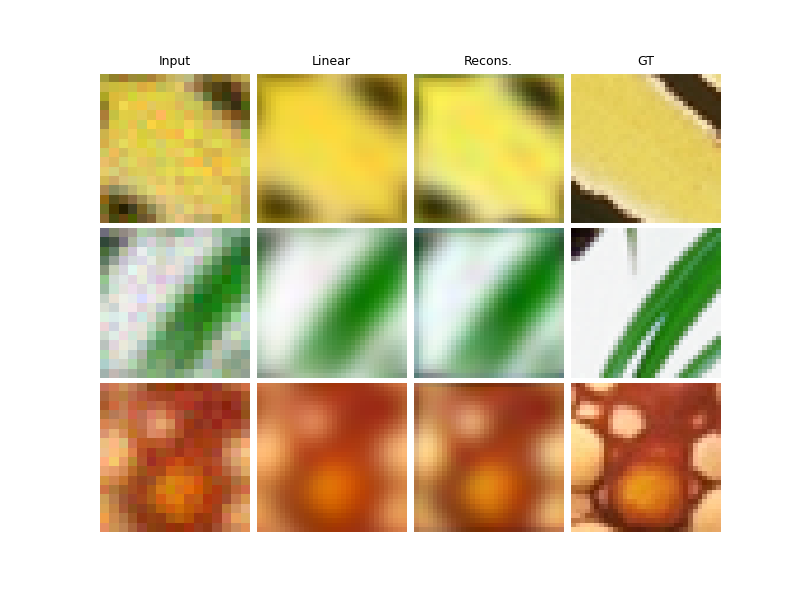
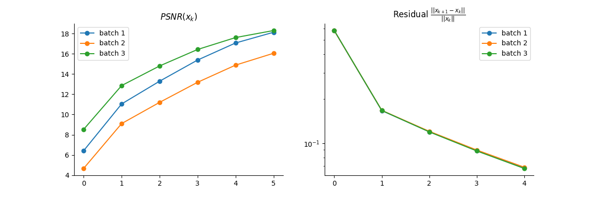

Note
Go to the end to download the full example code
Vanilla Unfolded algorithm for super-resolution
This is a simple example to show how to use vanilla unfolded Plug-and-Play.
The DnCNN denoiser and the algorithm parameters (stepsize, regularization parameters) are trained jointly.
For simplicity, we show how to train the algorithm on a small dataset. For optimal results, use a larger dataset.
For visualizing the training, you can use Weight&Bias (wandb) by setting wandb_vis=True.
import deepinv as dinv
from pathlib import Path
import torch
from torch.utils.data import DataLoader
from deepinv.optim.data_fidelity import L2
from deepinv.optim.prior import PnP
from deepinv.unfolded import unfolded_builder
from deepinv.training_utils import train, test
from torchvision import transforms
from deepinv.utils.demo import load_dataset
Setup paths for data loading and results.
BASE_DIR = Path(".")
ORIGINAL_DATA_DIR = BASE_DIR / "datasets"
DATA_DIR = BASE_DIR / "measurements"
RESULTS_DIR = BASE_DIR / "results"
CKPT_DIR = BASE_DIR / "ckpts"
# Set the global random seed from pytorch to ensure reproducibility of the example.
torch.manual_seed(0)
device = dinv.utils.get_freer_gpu() if torch.cuda.is_available() else "cpu"
Load base image datasets and degradation operators.
In this example, we use the CBSD500 dataset for training and the Set3C dataset for testing.
img_size = 64 if torch.cuda.is_available() else 32
n_channels = 3 # 3 for color images, 1 for gray-scale images
operation = "super-resolution"
Generate a dataset of low resolution images and load it.
We use the Downsampling class from the physics module to generate a dataset of low resolution images.
# For simplicity, we use a small dataset for training.
# To be replaced for optimal results. For example, you can use the larger "drunet" dataset.
train_dataset_name = "CBSD500"
test_dataset_name = "set3c"
# Specify the train and test transforms to be applied to the input images.
test_transform = transforms.Compose(
[transforms.CenterCrop(img_size), transforms.ToTensor()]
)
train_transform = transforms.Compose(
[transforms.RandomCrop(img_size), transforms.ToTensor()]
)
# Define the base train and test datasets of clean images.
train_base_dataset = load_dataset(
train_dataset_name, ORIGINAL_DATA_DIR, transform=train_transform
)
test_base_dataset = load_dataset(
test_dataset_name, ORIGINAL_DATA_DIR, transform=test_transform
)
# Use parallel dataloader if using a GPU to fasten training, otherwise, as all computes are on CPU, use synchronous
# dataloading.
num_workers = 4 if torch.cuda.is_available() else 0
# Degradation parameters
factor = 2
noise_level_img = 0.03
# Generate the gaussian blur downsampling operator.
physics = dinv.physics.Downsampling(
img_size=(n_channels, img_size, img_size),
factor=factor,
mode="gauss",
device=device,
noise_model=dinv.physics.GaussianNoise(sigma=noise_level_img),
)
my_dataset_name = "demo_unfolded_sr"
n_images_max = (
1000 if torch.cuda.is_available() else 10
) # maximal number of images used for training
measurement_dir = DATA_DIR / train_dataset_name / operation
generated_datasets_path = dinv.datasets.generate_dataset(
train_dataset=train_base_dataset,
test_dataset=test_base_dataset,
physics=physics,
device=device,
save_dir=measurement_dir,
train_datapoints=n_images_max,
num_workers=num_workers,
dataset_filename=str(my_dataset_name),
)
train_dataset = dinv.datasets.HDF5Dataset(path=generated_datasets_path, train=True)
test_dataset = dinv.datasets.HDF5Dataset(path=generated_datasets_path, train=False)
Downloading datasets/CBSD500.zip
0%| | 0.00/71.0M [00:00<?, ?iB/s]
0%| | 15.4k/71.0M [00:00<10:50, 109kiB/s]
0%| | 48.1k/71.0M [00:00<05:56, 199kiB/s]
0%| | 144k/71.0M [00:00<02:21, 501kiB/s]
0%| | 261k/71.0M [00:00<01:37, 724kiB/s]
1%| | 458k/71.0M [00:00<01:03, 1.12MiB/s]
1%| | 769k/71.0M [00:00<00:40, 1.75MiB/s]
2%|▏ | 1.09M/71.0M [00:00<00:33, 2.07MiB/s]
2%|▏ | 1.42M/71.0M [00:00<00:29, 2.33MiB/s]
2%|▏ | 1.74M/71.0M [00:01<00:27, 2.51MiB/s]
3%|▎ | 2.04M/71.0M [00:01<00:26, 2.65MiB/s]
3%|▎ | 2.31M/71.0M [00:04<04:16, 268kiB/s]
4%|▎ | 2.65M/71.0M [00:04<02:52, 397kiB/s]
4%|▍ | 2.98M/71.0M [00:04<02:05, 543kiB/s]
5%|▍ | 3.26M/71.0M [00:04<01:37, 692kiB/s]
5%|▌ | 3.63M/71.0M [00:04<01:09, 963kiB/s]
6%|▌ | 3.99M/71.0M [00:04<00:52, 1.26MiB/s]
6%|▌ | 4.29M/71.0M [00:05<00:47, 1.40MiB/s]
6%|▋ | 4.61M/71.0M [00:05<00:39, 1.69MiB/s]
7%|▋ | 4.95M/71.0M [00:05<00:33, 1.98MiB/s]
7%|▋ | 5.27M/71.0M [00:05<00:30, 2.13MiB/s]
8%|▊ | 5.55M/71.0M [00:05<00:29, 2.20MiB/s]
8%|▊ | 5.90M/71.0M [00:05<00:26, 2.44MiB/s]
9%|▉ | 6.27M/71.0M [00:05<00:23, 2.74MiB/s]
9%|▉ | 6.58M/71.0M [00:05<00:25, 2.52MiB/s]
10%|▉ | 6.91M/71.0M [00:05<00:23, 2.68MiB/s]
10%|█ | 7.27M/71.0M [00:06<00:21, 2.92MiB/s]
11%|█ | 7.58M/71.0M [00:06<00:24, 2.63MiB/s]
11%|█ | 7.92M/71.0M [00:06<00:22, 2.81MiB/s]
12%|█▏ | 8.22M/71.0M [00:06<00:21, 2.86MiB/s]
12%|█▏ | 8.55M/71.0M [00:06<00:20, 2.98MiB/s]
12%|█▏ | 8.86M/71.0M [00:06<00:23, 2.66MiB/s]
13%|█▎ | 9.20M/71.0M [00:06<00:21, 2.81MiB/s]
13%|█▎ | 9.54M/71.0M [00:06<00:20, 2.96MiB/s]
14%|█▍ | 9.84M/71.0M [00:06<00:21, 2.84MiB/s]
14%|█▍ | 10.1M/71.0M [00:07<00:22, 2.69MiB/s]
15%|█▍ | 10.5M/71.0M [00:07<00:21, 2.85MiB/s]
15%|█▌ | 10.8M/71.0M [00:07<00:20, 2.92MiB/s]
16%|█▌ | 11.1M/71.0M [00:07<00:19, 3.01MiB/s]
16%|█▌ | 11.4M/71.0M [00:07<00:22, 2.69MiB/s]
17%|█▋ | 11.7M/71.0M [00:07<00:21, 2.80MiB/s]
17%|█▋ | 12.0M/71.0M [00:07<00:20, 2.90MiB/s]
17%|█▋ | 12.4M/71.0M [00:07<00:19, 2.99MiB/s]
18%|█▊ | 12.7M/71.0M [00:07<00:21, 2.67MiB/s]
18%|█▊ | 13.0M/71.0M [00:08<00:20, 2.83MiB/s]
19%|█▊ | 13.3M/71.0M [00:08<00:19, 2.91MiB/s]
19%|█▉ | 13.6M/71.0M [00:08<00:19, 2.98MiB/s]
20%|█▉ | 13.9M/71.0M [00:08<00:19, 2.88MiB/s]
20%|██ | 14.2M/71.0M [00:08<00:21, 2.70MiB/s]
20%|██ | 14.5M/71.0M [00:08<00:20, 2.82MiB/s]
21%|██ | 14.8M/71.0M [00:08<00:19, 2.92MiB/s]
21%|██▏ | 15.2M/71.0M [00:08<00:18, 2.98MiB/s]
22%|██▏ | 15.5M/71.0M [00:08<00:20, 2.69MiB/s]
22%|██▏ | 15.8M/71.0M [00:09<00:19, 2.83MiB/s]
23%|██▎ | 16.1M/71.0M [00:09<00:18, 2.92MiB/s]
23%|██▎ | 16.4M/71.0M [00:09<00:18, 2.97MiB/s]
24%|██▎ | 16.7M/71.0M [00:09<00:20, 2.68MiB/s]
24%|██▍ | 17.1M/71.0M [00:09<00:18, 2.85MiB/s]
24%|██▍ | 17.4M/71.0M [00:09<00:18, 2.91MiB/s]
25%|██▍ | 17.7M/71.0M [00:09<00:17, 2.97MiB/s]
25%|██▌ | 18.0M/71.0M [00:09<00:19, 2.69MiB/s]
26%|██▌ | 18.3M/71.0M [00:09<00:18, 2.84MiB/s]
26%|██▋ | 18.6M/71.0M [00:10<00:18, 2.91MiB/s]
27%|██▋ | 19.0M/71.0M [00:10<00:17, 2.98MiB/s]
27%|██▋ | 19.3M/71.0M [00:10<00:19, 2.68MiB/s]
28%|██▊ | 19.6M/71.0M [00:10<00:18, 2.79MiB/s]
28%|██▊ | 19.9M/71.0M [00:10<00:17, 2.90MiB/s]
28%|██▊ | 20.2M/71.0M [00:10<00:17, 2.93MiB/s]
29%|██▉ | 20.5M/71.0M [00:10<00:17, 2.91MiB/s]
29%|██▉ | 20.8M/71.0M [00:10<00:18, 2.71MiB/s]
30%|██▉ | 21.1M/71.0M [00:10<00:18, 2.75MiB/s]
30%|███ | 21.4M/71.0M [00:10<00:17, 2.78MiB/s]
31%|███ | 21.7M/71.0M [00:11<00:17, 2.82MiB/s]
31%|███ | 22.0M/71.0M [00:11<00:17, 2.87MiB/s]
31%|███▏ | 22.3M/71.0M [00:11<00:17, 2.86MiB/s]
32%|███▏ | 22.6M/71.0M [00:11<00:17, 2.75MiB/s]
32%|███▏ | 22.9M/71.0M [00:11<00:17, 2.80MiB/s]
33%|███▎ | 23.2M/71.0M [00:11<00:16, 2.82MiB/s]
33%|███▎ | 23.5M/71.0M [00:11<00:16, 2.86MiB/s]
33%|███▎ | 23.8M/71.0M [00:11<00:16, 2.90MiB/s]
34%|███▍ | 24.0M/71.0M [00:11<00:16, 2.90MiB/s]
34%|███▍ | 24.3M/71.0M [00:12<00:16, 2.77MiB/s]
35%|███▍ | 24.6M/71.0M [00:12<00:16, 2.83MiB/s]
35%|███▌ | 24.9M/71.0M [00:12<00:16, 2.82MiB/s]
36%|███▌ | 25.2M/71.0M [00:12<00:15, 2.86MiB/s]
36%|███▌ | 25.5M/71.0M [00:12<00:15, 2.94MiB/s]
36%|███▋ | 25.8M/71.0M [00:12<00:15, 2.91MiB/s]
37%|███▋ | 26.1M/71.0M [00:12<00:16, 2.79MiB/s]
37%|███▋ | 26.4M/71.0M [00:12<00:15, 2.81MiB/s]
38%|███▊ | 26.7M/71.0M [00:12<00:15, 2.82MiB/s]
38%|███▊ | 27.0M/71.0M [00:12<00:15, 2.84MiB/s]
38%|███▊ | 27.3M/71.0M [00:13<00:15, 2.91MiB/s]
39%|███▉ | 27.6M/71.0M [00:13<00:14, 2.90MiB/s]
39%|███▉ | 27.9M/71.0M [00:13<00:15, 2.79MiB/s]
40%|███▉ | 28.2M/71.0M [00:13<00:15, 2.79MiB/s]
40%|████ | 28.5M/71.0M [00:13<00:15, 2.82MiB/s]
41%|████ | 28.8M/71.0M [00:13<00:14, 2.85MiB/s]
41%|████ | 29.1M/71.0M [00:13<00:14, 2.88MiB/s]
41%|████▏ | 29.4M/71.0M [00:13<00:14, 2.90MiB/s]
42%|████▏ | 29.7M/71.0M [00:13<00:14, 2.92MiB/s]
42%|████▏ | 30.0M/71.0M [00:14<00:14, 2.80MiB/s]
43%|████▎ | 30.2M/71.0M [00:14<00:14, 2.82MiB/s]
43%|████▎ | 30.5M/71.0M [00:14<00:14, 2.84MiB/s]
43%|████▎ | 30.8M/71.0M [00:14<00:14, 2.85MiB/s]
44%|████▍ | 31.1M/71.0M [00:14<00:13, 2.91MiB/s]
44%|████▍ | 31.4M/71.0M [00:14<00:13, 2.91MiB/s]
45%|████▍ | 31.7M/71.0M [00:14<00:13, 2.82MiB/s]
45%|████▌ | 32.0M/71.0M [00:14<00:13, 2.81MiB/s]
46%|████▌ | 32.3M/71.0M [00:14<00:13, 2.84MiB/s]
46%|████▌ | 32.6M/71.0M [00:14<00:13, 2.84MiB/s]
46%|████▋ | 32.9M/71.0M [00:15<00:13, 2.82MiB/s]
47%|████▋ | 33.2M/71.0M [00:15<00:12, 2.95MiB/s]
47%|████▋ | 33.5M/71.0M [00:15<00:13, 2.83MiB/s]
48%|████▊ | 33.8M/71.0M [00:15<00:13, 2.81MiB/s]
48%|████▊ | 34.1M/71.0M [00:15<00:12, 2.86MiB/s]
48%|████▊ | 34.4M/71.0M [00:15<00:13, 2.77MiB/s]
49%|████▉ | 34.7M/71.0M [00:15<00:12, 2.89MiB/s]
49%|████▉ | 35.0M/71.0M [00:15<00:12, 2.83MiB/s]
50%|████▉ | 35.3M/71.0M [00:15<00:12, 2.83MiB/s]
50%|█████ | 35.6M/71.0M [00:15<00:12, 2.86MiB/s]
51%|█████ | 35.9M/71.0M [00:16<00:12, 2.83MiB/s]
51%|█████ | 36.2M/71.0M [00:16<00:12, 2.83MiB/s]
51%|█████▏ | 36.5M/71.0M [00:16<00:11, 2.91MiB/s]
52%|█████▏ | 36.8M/71.0M [00:16<00:12, 2.83MiB/s]
52%|█████▏ | 37.1M/71.0M [00:16<00:12, 2.74MiB/s]
53%|█████▎ | 37.4M/71.0M [00:16<00:11, 2.86MiB/s]
53%|█████▎ | 37.7M/71.0M [00:16<00:11, 2.86MiB/s]
54%|█████▎ | 38.0M/71.0M [00:16<00:11, 2.90MiB/s]
54%|█████▍ | 38.3M/71.0M [00:16<00:11, 2.86MiB/s]
54%|█████▍ | 38.6M/71.0M [00:17<00:11, 2.76MiB/s]
55%|█████▍ | 38.9M/71.0M [00:17<00:11, 2.85MiB/s]
55%|█████▌ | 39.2M/71.0M [00:17<00:11, 2.86MiB/s]
56%|█████▌ | 39.5M/71.0M [00:17<00:10, 2.89MiB/s]
56%|█████▌ | 39.8M/71.0M [00:17<00:10, 2.87MiB/s]
57%|█████▋ | 40.1M/71.0M [00:17<00:11, 2.78MiB/s]
57%|█████▋ | 40.4M/71.0M [00:17<00:10, 2.86MiB/s]
57%|█████▋ | 40.7M/71.0M [00:17<00:10, 2.86MiB/s]
58%|█████▊ | 41.0M/71.0M [00:17<00:10, 2.90MiB/s]
58%|█████▊ | 41.3M/71.0M [00:17<00:10, 2.95MiB/s]
59%|█████▊ | 41.6M/71.0M [00:18<00:10, 2.87MiB/s]
59%|█████▉ | 41.9M/71.0M [00:18<00:10, 2.78MiB/s]
59%|█████▉ | 42.2M/71.0M [00:18<00:10, 2.84MiB/s]
60%|█████▉ | 42.5M/71.0M [00:18<00:10, 2.84MiB/s]
60%|██████ | 42.8M/71.0M [00:18<00:09, 2.92MiB/s]
61%|██████ | 43.1M/71.0M [00:18<00:09, 2.86MiB/s]
61%|██████ | 43.4M/71.0M [00:18<00:09, 2.76MiB/s]
62%|██████▏ | 43.7M/71.0M [00:18<00:09, 2.86MiB/s]
62%|██████▏ | 44.0M/71.0M [00:18<00:09, 2.84MiB/s]
62%|██████▏ | 44.4M/71.0M [00:19<00:09, 2.94MiB/s]
63%|██████▎ | 44.7M/71.0M [00:19<00:09, 2.86MiB/s]
63%|██████▎ | 44.9M/71.0M [00:19<00:09, 2.77MiB/s]
64%|██████▍ | 45.3M/71.0M [00:19<00:09, 2.86MiB/s]
64%|██████▍ | 45.5M/71.0M [00:19<00:08, 2.87MiB/s]
65%|██████▍ | 45.8M/71.0M [00:19<00:08, 2.83MiB/s]
65%|██████▍ | 46.1M/71.0M [00:19<00:08, 2.82MiB/s]
65%|██████▌ | 46.4M/71.0M [00:19<00:08, 2.90MiB/s]
66%|██████▌ | 46.7M/71.0M [00:19<00:08, 2.79MiB/s]
66%|██████▌ | 47.0M/71.0M [00:20<00:08, 2.82MiB/s]
67%|██████▋ | 47.3M/71.0M [00:20<00:08, 2.87MiB/s]
67%|██████▋ | 47.6M/71.0M [00:20<00:08, 2.86MiB/s]
67%|██████▋ | 47.9M/71.0M [00:20<00:08, 2.84MiB/s]
68%|██████▊ | 48.2M/71.0M [00:20<00:07, 2.89MiB/s]
68%|██████▊ | 48.5M/71.0M [00:20<00:08, 2.80MiB/s]
69%|██████▊ | 48.8M/71.0M [00:20<00:07, 2.82MiB/s]
69%|██████▉ | 49.1M/71.0M [00:20<00:07, 2.87MiB/s]
70%|██████▉ | 49.4M/71.0M [00:20<00:07, 2.86MiB/s]
70%|██████▉ | 49.7M/71.0M [00:20<00:07, 2.84MiB/s]
70%|███████ | 50.0M/71.0M [00:21<00:07, 2.89MiB/s]
71%|███████ | 50.3M/71.0M [00:21<00:07, 2.80MiB/s]
71%|███████ | 50.6M/71.0M [00:21<00:07, 2.84MiB/s]
72%|███████▏ | 50.9M/71.0M [00:21<00:06, 2.89MiB/s]
72%|███████▏ | 51.2M/71.0M [00:21<00:06, 2.87MiB/s]
73%|███████▎ | 51.5M/71.0M [00:21<00:06, 2.84MiB/s]
73%|███████▎ | 51.8M/71.0M [00:21<00:06, 2.88MiB/s]
73%|███████▎ | 52.1M/71.0M [00:21<00:06, 2.76MiB/s]
74%|███████▍ | 52.4M/71.0M [00:21<00:06, 2.85MiB/s]
74%|███████▍ | 52.7M/71.0M [00:21<00:06, 2.90MiB/s]
75%|███████▍ | 53.0M/71.0M [00:22<00:06, 2.88MiB/s]
75%|███████▌ | 53.2M/71.0M [00:22<00:06, 2.86MiB/s]
75%|███████▌ | 53.5M/71.0M [00:22<00:06, 2.89MiB/s]
76%|███████▌ | 53.8M/71.0M [00:22<00:06, 2.75MiB/s]
76%|███████▋ | 54.1M/71.0M [00:22<00:05, 2.81MiB/s]
77%|███████▋ | 54.5M/71.0M [00:22<00:05, 2.89MiB/s]
77%|███████▋ | 54.7M/71.0M [00:24<00:32, 506kiB/s]
78%|███████▊ | 55.0M/71.0M [00:24<00:25, 631kiB/s]
78%|███████▊ | 55.3M/71.0M [00:24<00:18, 848kiB/s]
78%|███████▊ | 55.7M/71.0M [00:24<00:13, 1.13MiB/s]
79%|███████▉ | 56.0M/71.0M [00:24<00:10, 1.40MiB/s]
79%|███████▉ | 56.3M/71.0M [00:24<00:09, 1.53MiB/s]
80%|███████▉ | 56.6M/71.0M [00:25<00:07, 1.82MiB/s]
80%|████████ | 56.9M/71.0M [00:25<00:06, 2.13MiB/s]
81%|████████ | 57.3M/71.0M [00:25<00:05, 2.38MiB/s]
81%|████████ | 57.6M/71.0M [00:25<00:05, 2.29MiB/s]
82%|████████▏ | 57.9M/71.0M [00:25<00:05, 2.50MiB/s]
82%|████████▏ | 58.2M/71.0M [00:25<00:04, 2.71MiB/s]
82%|████████▏ | 58.5M/71.0M [00:25<00:04, 2.80MiB/s]
83%|████████▎ | 58.8M/71.0M [00:25<00:04, 2.58MiB/s]
83%|████████▎ | 59.1M/71.0M [00:25<00:04, 2.67MiB/s]
84%|████████▍ | 59.4M/71.0M [00:26<00:04, 2.78MiB/s]
84%|████████▍ | 59.7M/71.0M [00:26<00:03, 2.82MiB/s]
85%|████████▍ | 60.1M/71.0M [00:26<00:03, 2.97MiB/s]
85%|████████▌ | 60.4M/71.0M [00:26<00:03, 2.69MiB/s]
85%|████████▌ | 60.7M/71.0M [00:26<00:03, 2.64MiB/s]
86%|████████▌ | 61.0M/71.0M [00:26<00:03, 2.75MiB/s]
86%|████████▋ | 61.3M/71.0M [00:26<00:03, 2.82MiB/s]
87%|████████▋ | 61.6M/71.0M [00:26<00:03, 2.92MiB/s]
87%|████████▋ | 61.9M/71.0M [00:26<00:03, 2.79MiB/s]
88%|████████▊ | 62.2M/71.0M [00:27<00:03, 2.79MiB/s]
88%|████████▊ | 62.5M/71.0M [00:27<00:03, 2.77MiB/s]
88%|████████▊ | 62.8M/71.0M [00:27<00:02, 2.86MiB/s]
89%|████████▉ | 63.1M/71.0M [00:27<00:02, 2.96MiB/s]
89%|████████▉ | 63.4M/71.0M [00:27<00:02, 2.81MiB/s]
90%|████████▉ | 63.7M/71.0M [00:27<00:02, 2.81MiB/s]
90%|█████████ | 64.0M/71.0M [00:27<00:02, 2.81MiB/s]
91%|█████████ | 64.3M/71.0M [00:27<00:02, 2.86MiB/s]
91%|█████████ | 64.6M/71.0M [00:27<00:02, 2.90MiB/s]
91%|█████████▏| 64.9M/71.0M [00:27<00:02, 2.88MiB/s]
92%|█████████▏| 65.2M/71.0M [00:28<00:02, 2.83MiB/s]
92%|█████████▏| 65.5M/71.0M [00:28<00:01, 2.86MiB/s]
93%|█████████▎| 65.8M/71.0M [00:28<00:01, 2.78MiB/s]
93%|█████████▎| 66.0M/71.0M [00:28<00:01, 2.80MiB/s]
93%|█████████▎| 66.3M/71.0M [00:28<00:01, 2.84MiB/s]
94%|█████████▍| 66.6M/71.0M [00:28<00:01, 2.89MiB/s]
94%|█████████▍| 67.0M/71.0M [00:28<00:01, 2.85MiB/s]
95%|█████████▍| 67.2M/71.0M [00:28<00:01, 2.88MiB/s]
95%|█████████▌| 67.5M/71.0M [00:28<00:01, 2.79MiB/s]
96%|█████████▌| 67.8M/71.0M [00:28<00:01, 2.78MiB/s]
96%|█████████▌| 68.1M/71.0M [00:29<00:01, 2.79MiB/s]
96%|█████████▋| 68.4M/71.0M [00:29<00:00, 2.81MiB/s]
97%|█████████▋| 68.7M/71.0M [00:29<00:00, 2.80MiB/s]
97%|█████████▋| 69.0M/71.0M [00:29<00:00, 2.83MiB/s]
98%|█████████▊| 69.3M/71.0M [00:29<00:00, 2.86MiB/s]
98%|█████████▊| 69.5M/71.0M [00:29<00:00, 2.85MiB/s]
98%|█████████▊| 69.8M/71.0M [00:29<00:00, 2.85MiB/s]
99%|█████████▉| 70.1M/71.0M [00:29<00:00, 2.83MiB/s]
99%|█████████▉| 70.4M/71.0M [00:29<00:00, 2.84MiB/s]
100%|█████████▉| 70.7M/71.0M [00:30<00:00, 2.83MiB/s]
100%|██████████| 71.0M/71.0M [00:30<00:00, 2.36MiB/s]
CBSD500 dataset downloaded in datasets
Downloading datasets/set3c.zip
0%| | 0.00/385k [00:00<?, ?iB/s]
25%|██▍ | 95.2k/385k [00:00<00:00, 653kiB/s]
60%|██████ | 232k/385k [00:00<00:00, 1.01MiB/s]
100%|██████████| 385k/385k [00:00<00:00, 1.36MiB/s]
set3c dataset downloaded in datasets
Computing train measurement vectors from base dataset...
0%| | 0/1 [00:00<?, ?it/s]
100%|██████████| 1/1 [00:00<00:00, 36.59it/s]
Computing test measurement vectors from base dataset...
0%| | 0/1 [00:00<?, ?it/s]
100%|██████████| 1/1 [00:00<00:00, 82.96it/s]
Dataset has been saved in measurements/CBSD500/super-resolution
Define the unfolded PnP algorithm.
We use the helper function deepinv.unfolded.unfolded_builder() to defined the Unfolded architecture.
The chosen algorithm is here DRS (Douglas-Rachford Splitting).
Note that if the prior (resp. a parameter) is initialized with a list of lenght max_iter,
then a distinct model (resp. parameter) is trained for each iteration.
For fixed trained model prior (resp. parameter) across iterations, initialize with a single element.
# Unrolled optimization algorithm parameters
max_iter = 5 # number of unfolded layers
# Select the data fidelity term
data_fidelity = L2()
# Set up the trainable denoising prior
# Here the prior model is common for all iterations
prior = PnP(denoiser=dinv.models.DnCNN(depth=7, pretrained=None, train=True).to(device))
# The parameters are initialized with a list of length max_iter, so that a distinct parameter is trained for each iteration.
lamb = [
1.0
] * max_iter # regularization parameter (multiplier of the data fidelity term)
stepsize = [1.0] * max_iter # stepsize of the algorithm
sigma_denoiser = [0.01] * max_iter # noise level parameter of the denoiser
beta = 1.0 # relaxation parameter of the Douglas-Rachford splitting
params_algo = { # wrap all the restoration parameters in a 'params_algo' dictionary
"stepsize": stepsize,
"lambda": lamb,
"g_param": sigma_denoiser,
"beta": beta,
}
trainable_params = [
"lambda",
"g_param",
"stepsize",
"beta",
] # define which parameters from 'params_algo' are trainable
# Logging parameters
verbose = True
wandb_vis = False # plot curves and images in Weight&Bias
# Define the unfolded trainable model.
model = unfolded_builder(
iteration="DRS",
params_algo=params_algo.copy(),
trainable_params=trainable_params,
data_fidelity=data_fidelity,
max_iter=max_iter,
prior=prior,
)
Define the training parameters.
We use the Adam optimizer and the StepLR scheduler.
# training parameters
epochs = 10 if torch.cuda.is_available() else 2
learning_rate = 5e-4
train_batch_size = 32 if torch.cuda.is_available() else 1
test_batch_size = 3
# choose optimizer and scheduler
optimizer = torch.optim.Adam(model.parameters(), lr=learning_rate, weight_decay=1e-8)
scheduler = torch.optim.lr_scheduler.StepLR(optimizer, step_size=int(epochs * 0.8))
# choose supervised training loss
losses = [dinv.loss.SupLoss(metric=dinv.metric.mse())]
train_dataloader = DataLoader(
train_dataset, batch_size=train_batch_size, num_workers=num_workers, shuffle=True
)
test_dataloader = DataLoader(
test_dataset, batch_size=test_batch_size, num_workers=num_workers, shuffle=False
)
Train the network
We train the network using the library’s train function.
train(
model=model,
train_dataloader=train_dataloader,
eval_dataloader=test_dataloader,
epochs=epochs,
scheduler=scheduler,
losses=losses,
physics=physics,
optimizer=optimizer,
device=device,
save_path=str(CKPT_DIR / operation),
verbose=verbose,
wandb_vis=wandb_vis, # training visualization can be done in Weight&Bias
)
The model has 188179 trainable parameters
23-10-24-10:26:56 [1/2] loss=7.86e-03 Loss_sup=7.86e-03 Train_psnr_model=22.29 Eval_psnr_model=17.20
23-10-24-10:26:57 [2/2] loss=6.76e-03 Loss_sup=6.76e-03 Train_psnr_model=23.30 Eval_psnr_model=17.29
BaseUnfold(
(fixed_point): FixedPoint(
(iterator): DRSIteration(
(f_step): fStepDRS()
(g_step): gStepDRS()
)
)
(init_params_algo): ParameterDict(
(beta): Object of type: ParameterList
(g_param): Object of type: ParameterList
(lambda): Object of type: ParameterList
(stepsize): Object of type: ParameterList
(beta): ParameterList( (0): Parameter containing: [torch.float32 of size ])
(g_param): ParameterList(
(0): Parameter containing: [torch.float32 of size ]
(1): Parameter containing: [torch.float32 of size ]
(2): Parameter containing: [torch.float32 of size ]
(3): Parameter containing: [torch.float32 of size ]
(4): Parameter containing: [torch.float32 of size ]
)
(lambda): ParameterList(
(0): Parameter containing: [torch.float32 of size ]
(1): Parameter containing: [torch.float32 of size ]
(2): Parameter containing: [torch.float32 of size ]
(3): Parameter containing: [torch.float32 of size ]
(4): Parameter containing: [torch.float32 of size ]
)
(stepsize): ParameterList(
(0): Parameter containing: [torch.float32 of size ]
(1): Parameter containing: [torch.float32 of size ]
(2): Parameter containing: [torch.float32 of size ]
(3): Parameter containing: [torch.float32 of size ]
(4): Parameter containing: [torch.float32 of size ]
)
)
(params_algo): ParameterDict(
(beta): Object of type: ParameterList
(g_param): Object of type: ParameterList
(lambda): Object of type: ParameterList
(stepsize): Object of type: ParameterList
(beta): ParameterList( (0): Parameter containing: [torch.float32 of size ])
(g_param): ParameterList(
(0): Parameter containing: [torch.float32 of size ]
(1): Parameter containing: [torch.float32 of size ]
(2): Parameter containing: [torch.float32 of size ]
(3): Parameter containing: [torch.float32 of size ]
(4): Parameter containing: [torch.float32 of size ]
)
(lambda): ParameterList(
(0): Parameter containing: [torch.float32 of size ]
(1): Parameter containing: [torch.float32 of size ]
(2): Parameter containing: [torch.float32 of size ]
(3): Parameter containing: [torch.float32 of size ]
(4): Parameter containing: [torch.float32 of size ]
)
(stepsize): ParameterList(
(0): Parameter containing: [torch.float32 of size ]
(1): Parameter containing: [torch.float32 of size ]
(2): Parameter containing: [torch.float32 of size ]
(3): Parameter containing: [torch.float32 of size ]
(4): Parameter containing: [torch.float32 of size ]
)
)
(prior): ModuleList(
(0): PnP(
(denoiser): DnCNN(
(in_conv): Conv2d(3, 64, kernel_size=(3, 3), stride=(1, 1), padding=(1, 1))
(conv_list): ModuleList(
(0-4): 5 x Conv2d(64, 64, kernel_size=(3, 3), stride=(1, 1), padding=(1, 1))
)
(out_conv): Conv2d(64, 3, kernel_size=(3, 3), stride=(1, 1), padding=(1, 1))
(nl_list): ModuleList(
(0-5): 6 x ReLU()
)
)
)
)
(data_fidelity): ModuleList(
(0): L2()
)
)
Test the network
method = "unfolded_drs"
save_folder = RESULTS_DIR / method / operation
wandb_vis = False # plot curves and images in Weight&Bias.
plot_images = True # plot images. Images are saved in save_folder.
plot_metrics = True # compute performance and convergence metrics along the algorithm, curved saved in RESULTS_DIR
test(
model=model,
test_dataloader=test_dataloader,
physics=physics,
device=device,
plot_images=plot_images,
save_folder=save_folder,
verbose=verbose,
plot_metrics=plot_metrics,
wandb_vis=wandb_vis, # test visualization can be done in Weight&Bias
)
- 
- 
Processing data of operator 1 out of 1
0%| | 0/1 [00:00<?, ?it/s]
100%|██████████| 1/1 [00:04<00:00, 4.14s/it]
100%|██████████| 1/1 [00:04<00:00, 4.14s/it]
Test PSNR: Linear rec.: 6.00+-0.00 dB | Model: 17.29+-0.00 dB.
(17.292417526245117, 0.0, 5.99602746963501, 0.0)
Plotting the trained parameters.
dinv.utils.plotting.plot_parameters(
model, init_params=params_algo, save_dir=RESULTS_DIR / method / operation
)
Total running time of the script: (0 minutes 40.712 seconds)